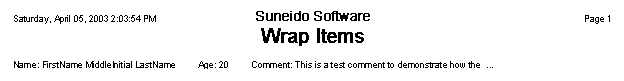

( formats )
Takes a list of format specifications and prints one item at a time until it gets to the edge of the page, then moves to the next line and continues to print.
For example:
format = Object('WrapItems')
format.Add(Object('Horz' Object('Text' 'Name: ')
Object('Text' 'FirstName MiddleInitial LastName')))
format.Add(Object('Horz' Object('Text' 'Age: ')
Object('Number' 20)))
format.Add(Object('Horz' Object('Text' 'Comment: ')
Object('Text' 'This is a test comment to demonstrate how the
WrapItemsFormat works. This will cause the format to put this
item on the next line.')))
Params.On_Preview(Object('Horz' format) title: 'Wrap Items')
Would produce:
